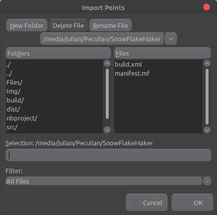

Salve, mi chiamo Julian Sprugasci e sono un programmatore alle prime armi. Questo programma e nato solamente per scopo ditattico e per dare la possibilità a noi studenti di praticare, migliorare le nostre skills e conoscenze nell'ambito della programmazione.
Il programma è stato sviluppato in Java, quindi è compatibile con tutti i sistemi operativi (Windows/Mac/Linux) che supportano Java 12 o superiori.
Alla portata di tutti. Ram minima 1 GB e java 12 o superiore
Simulare la creazione di un fiocco di neve partendo da un triangolo e poterlo salvare in una immagine.
1. Per iniziare premere su start.
2. Inserire il nome dell'editor desiderato.
3. Inserire i poligoni di taglio con il click del mouse. Ogni punto inserito può essere spostato o eliminato a proprio piacimento. Inoltre con la sezione controls è possibile cambiare i vari colori del triangolo, punti, ecc... Infine una volta inserito tutti i poligoni premere su generate.
3. Ora nella preview c'è una previsione di come sarà il fiocco di neve finale. È possibile continuare ad aggiornare la Preview finchè non si è soddisfatti.
4. Una volta soddisfatti del fiocco bisogna scegliere il tipo di immagine da salvare. Successivamente indserire il nome e la grandezza desiderata (500,1000,corrente). Infine verrà salvato il fiocco.
importPoints: Con il bottone Import Points sarà possibile importare i punti da un file .txt
savePoints: Con il bottone Save Points sarà possibile salvare i punti in un file .txt
reset: Con il bottone Reset sarà possibile resettare allo stato iniziale l'editor.